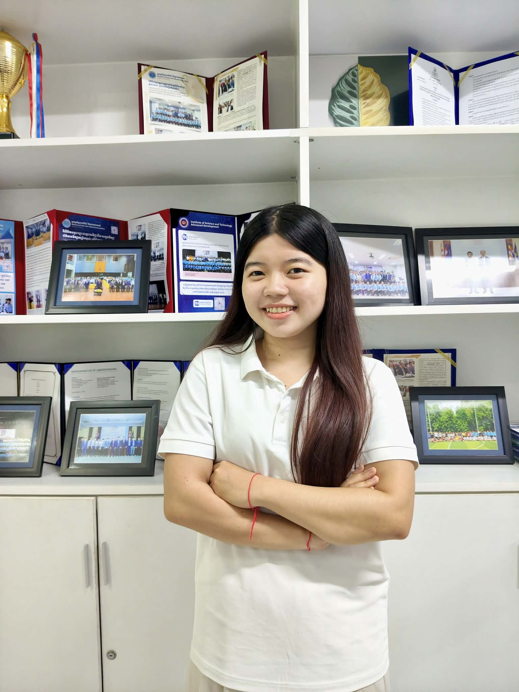

A space to grow
Little plans.
Big achievement.
Brighter futures.
Meet Planwise, a calmer place for your courses, tasks and moments of focus. Designed around the way students learn.
- Planning
- Focusing
- Achieving
48,000+
Active scholars
240+
Partner campuses
94.2%
Dean’s list rate
4.2h
Daily deep focus avg
Peer experience
Voices from the digital sanctuary.
From undergraduate lecture halls to doctoral defense prep, hear how university scholars reinvented their study rituals with Planwise.
-
“Planwise structured my revision schedule before finals without the clinical dread of traditional LMS portals. The calm interface feels like sitting in an organized sunlit library.”
Maya LinBioengineering ’26 -
“The circadian Pomodoro tracker modulated my study sessions around my actual alertness peaks. I went from chronic all-nighters to sleeping 8 hours with higher grades.”
Alex VanceCognitive Neuroscience, M.S. -
“The syllabus ingestion automatically broke down quantum electrodynamics problem sets into micro-milestones. Unmatched focus quality.”
Julian RossPhysics & Applied Math ’25 -
“Having task priorities, reading decks, and ambient noise in one clean tab removed the cognitive overload of juggling five apps.”
Elena RostovaPre-Law / History ’25 -
“The spaced repetition alerts notified me right before memory decay on organic chemistry pathways. It’s like having an executive coach on my desk.”
Marcus SterlingBiochemistry, Ph.D. Candidate -
“Writing my master’s thesis used to feel like drowning in tabs. Planwise’s clean reading workspaces gave me the mental space to synthesize 80+ sources calmly.”
Sophia ChenConstitutional Jurisprudence, J.D.
Our Visions
The four cognitive pillars of Planwise.
-
Structure first
Cognitive Organization
Planwise transforms overwhelming academic goals into clear, manageable study sessions. By breaking complex workloads into organized tasks and structured schedules, we help reduce decision fatigue and make each next step easier to approach. Less chaos, more clarity.
-
Focus by design
Attentional Ergonomics
We help you create dedicated study sessions around specific goals, giving your attention a clear direction and reducing unnecessary task-switching. Every session becomes an opportunity to engage deeply with what matters most. Less distraction, deeper concentration.
-
Consistency over intensity
Habit Architecture
Planwise encourages sustainable study routines through realistic schedules, repeatable habits, and small, achievable milestones. Instead of relying on last-minute motivation, we help you build a system that supports steady progress over time. Small steps, lasting momentum.
-
Balance is productivity
Cognitive Recovery
Effective learning requires more than continuous effort. Planwise makes room for breaks, personal time, and realistic workloads, helping you approach your studies with greater balance and sustainability. Study with intention, not exhaustion.
Scientific pedigree
The minds shaping Planwise.
-

AUPP / ISTAD
Ms. Sim Socheata
Software Development Enthusiast
Focused on building practical technology solutions and exploring ways to enhance learning through software development.
Developer
-
Stanford AI Lab
Dr. Claire Beauchamp
Head of Syllabus Telemetry
Architect of Planwise’s parsing model that extracts course milestones directly from unstructured departmental syllabi.
Telemetry Arch
-
MIT Media Lab alumni
Tariq Al-Mansoor
Lead Interface Ergonomist
Pioneered Planwise’s soft-tactile UI framework, eliminating high-stress visual alarms to sustain calm mental endurance.
Human Centered
-
Harvard graduate ed
Prof. Miriam Osei
Academic Advisory Chair
Advises national accreditation bodies on pedagogical digital health and equitable student learning access.
Board Governance